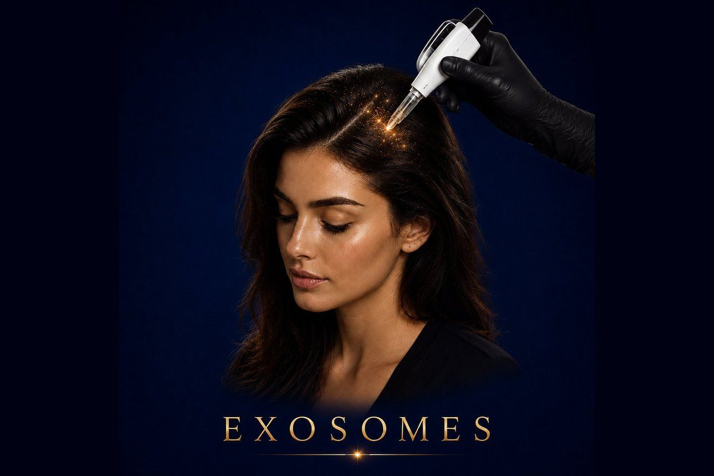

Hair Restoration
The latest Korean technology for hereditary baldness and chronic hair loss — a full transformation in hair density and quality, from the follicle outward.
✓ Full medical content — verified for SEO and patient information.

About
Exosomes are tiny extracellular vesicles — naturally occurring biological messengers — packed with concentrated growth factors, peptides, proteins, and signaling molecules that hair follicles need to function, grow, and resist loss. The exosomes used in Hollywood Clinic's hair protocol come from the most advanced Korean stem-cell technology platforms — currently considered the global gold standard for this category of treatment. Unlike traditional growth-factor injections that deliver vitamins and amino acids, exosomes deliver actual cellular communication — they instruct the hair follicle to behave like a young, active, healthy follicle. This is a fundamentally different mechanism from anything that came before it, and is why exosomes are considered the most significant advance in non-surgical hair restoration of the past decade. The treatment specifically targets the biological mechanisms behind hereditary hair loss (androgenetic alopecia), chronic hair shedding, and follicle weakness — extending the active growth phase of each hair, reducing immune attack on hair-related hormones, and stimulating new healthy hair growth from previously dormant follicles.
Why It Works
The Process
Your doctor evaluates your scalp using trichoscopy (specialized scalp imaging), identifies the type and pattern of hair loss, measures hair density, and confirms exosomes are right for your case.
The scalp is cleansed thoroughly. A topical numbing cream may be applied to make the injections more comfortable.
The exosome preparation is opened from its sterile, single-use vial in front of you. Hollywood Clinic uses only authentic Korean-imported exosome products — never decanted, never reused.
The exosome solution is delivered into the scalp using fine needles in a systematic pattern across the target zones (crown, temples, hairline, midline). Most patients describe it as small pricks; discomfort is mild and brief.
No washing, no swimming, no heavy sweating for 24 hours. You can return to normal activities immediately. There's no recovery period, no visible marks, no downtime.
A standard course is 2–4 sessions, typically spaced 3–4 weeks apart. Some patients with advanced hair loss benefit from additional maintenance sessions every 6–12 months. Your doctor will design a schedule based on your case and response.
Who It's For
Safety First
Quality You Can Trust
Treatment Comparisons
Growth Factor injections deliver concentrated vitamins, peptides, and amino acids to the scalp — strengthening and feeding existing follicles. Exosomes work at a deeper biological level by delivering cellular communication signals that change how the follicle actually behaves. Growth factors feed the follicle; exosomes reprogram it. Many patients combine both for optimal results.
PRP uses your own blood, processed to concentrate platelets and growth factors, then injected into the scalp. It's effective but variable — results depend on the quality of your platelets, which is affected by age, diet, and health. Exosomes deliver standardized, pharmaceutical-grade concentration regardless of your blood quality — making them more predictable and typically more powerful, especially in hereditary cases.
Mesotherapy delivers a mix of vitamins and amino acids to the scalp — surface-level nourishment. Exosomes work at the level of cellular signaling — a fundamentally deeper mechanism. Mesotherapy can complement exosomes (better follicle nutrition supporting better follicle programming) but cannot replace what exosomes do.
Minoxidil is a topical solution applied daily that extends the active growth phase of hair — similar in mechanism to one of exosomes' effects, but weaker, surface-applied, and dependent on daily compliance. Exosomes deliver a stronger, deeper, longer-lasting biological effect from each session. Many patients use both: exosomes for transformation, Minoxidil for daily support.
Hair transplant surgically moves hair follicles from a healthy donor area (back of the scalp) to bald areas — strong, permanent results for advanced cases. Exosomes don't add new follicles; they revive and strengthen existing ones. Best combination: exosomes to protect existing hair and strengthen results around a transplant; transplant for areas of complete baldness.
Investment
Exosomes
The price of an Exosomes hair session at Hollywood Clinic is set after a free consultation and depends on several factors.
Final pricing is determined after a free consultation, because every case is different.
Book Free ConsultationWhy Hollywood Clinic
Dr. Rana Safwat — Dermatology, Laser & Non-Surgical Aesthetics Consultant, 12+ years of experience. Ideal for comprehensive hair loss assessment and structured long-term Exosome and growth-factor protocols.
Dr. Nesma Samir — Laser Aesthetic Dermatology Specialist, 12 years of experience. Excellent for Exosome treatment combined with broader dermatological and scalp care.
Dr. Marwa Magdy — Aesthetic Dermatologist & Advanced Injector. Highly experienced in advanced injection protocols — ideal for patients who want Exosomes combined with other injectable treatments (Growth Factor, PRP, Hair Filler) in a coordinated plan.
FAQ